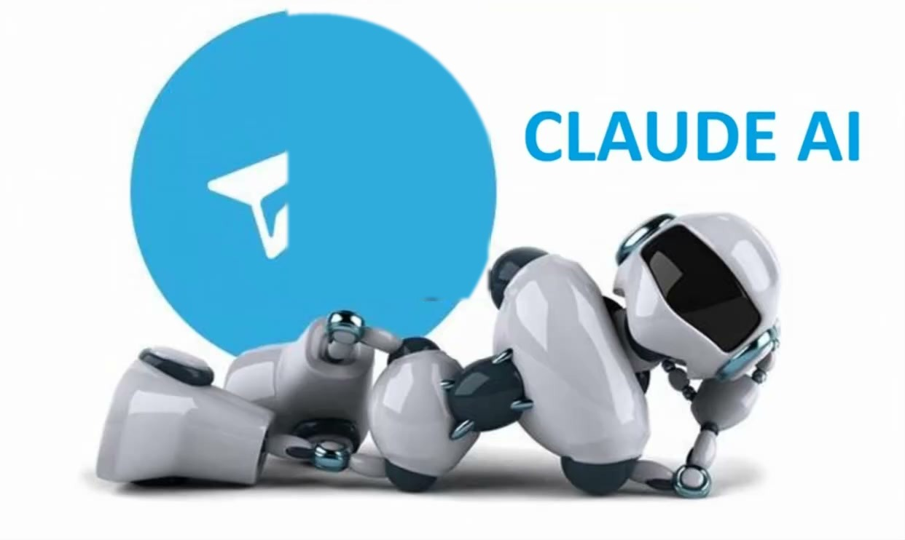
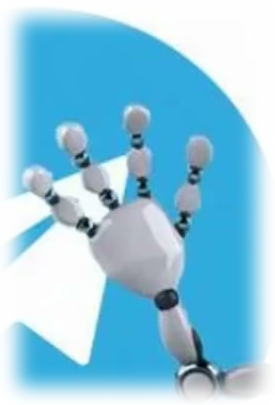

Превью: было (видео с водяным знаком Pollo.ai, статичное) → станет (CSS-анимация, без видео)


AI Studio
AI Teacher Bot — обучение Claude
65 уроков в Telegram: от первого диалога с ИИ до мультиагентных систем
Робот лежит статично (поза не менялась). Рука покачивается (rotate, без scale) — эффект приветственного взмаха. Глазки/визор пульсируют свечением (box-shadow/blur/brightness, без scale). Водяной знак "Pollo.ai" убран с исходного кадра видео.